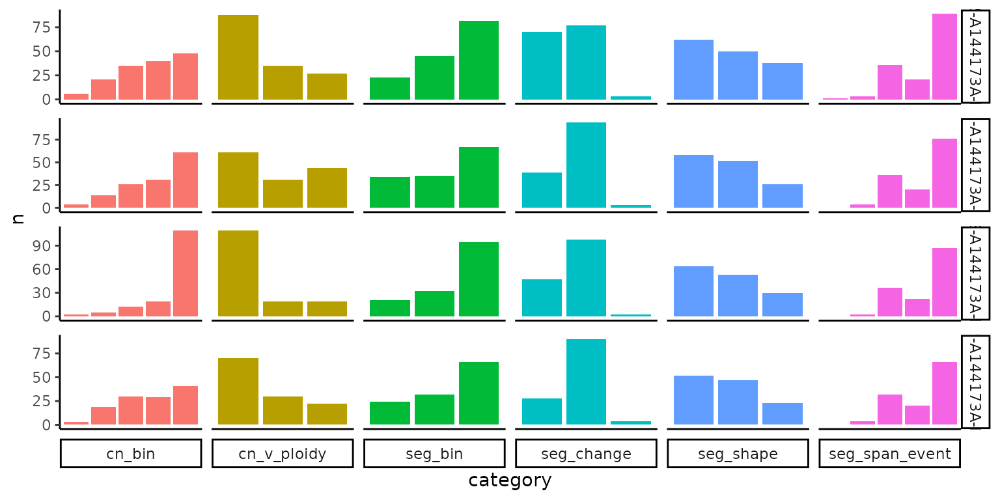
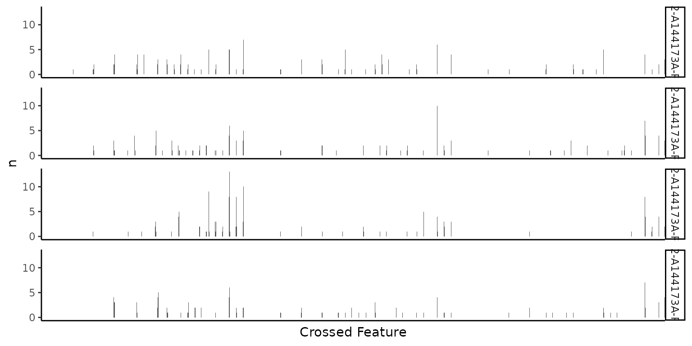
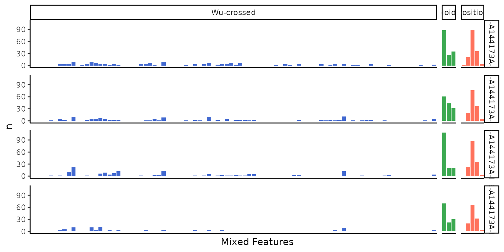

Feature Extraction for CN Signatures
feature_extraction.RmdFeatures Defined by Other Publications
dlptools offers two externally defined feature extraction types:
- Wu et al. https://www.biorxiv.org/content/10.1101/2025.03.02.641098v1
- Wang et al. https://journals.plos.org/plosgenetics/article?id=10.1371/journal.pgen.1009557
The Wang et al features are just a thin wrapper around sigminer functions. Check out that package for more tools and actual signature extraction.
A likely starting point of this exercise might be some read bin data, or some segment data. It’s probably good that it’s been cleaned up to your liking.
Perhaps the workflow would look something like this:
reads_df <- vroom::vroom("data/example_full_reads.tsv.gz")
segs_df <- reads_df |>
dlptools::mark_mask_regions() |>
dlptools::mark_bins_overlapping_centromeres(padding = 3e6) |>
dplyr::filter(
gc != -1 & map > 0.99 & !overlaps_centro & !mask
) |>
dlptools::add_missing_bins_for_cells() |>
dlptools::fill_state_from_neighbours() |>
dlptools::reads_to_segs() |>
dplyr::filter(
seg_width > 1.5e6
) |>
dlptools::segs_to_reads() |>
dlptools::add_missing_bins_for_cells() |>
dlptools::fill_state_from_neighbours() |>
dlptools::reads_to_segs()
dplyr::slice_head(segs_df, n = 5)
#> # A tibble: 5 × 6
#> cell_id chr start end state seg_width
#> <chr> <chr> <dbl> <dbl> <dbl> <dbl>
#> 1 AT21352-A144173A-R03-C12 1 1 10000000 4 9999999
#> 2 AT21352-A144173A-R03-C12 1 10000001 21500000 5 11499999
#> 3 AT21352-A144173A-R03-C12 1 21500001 39000000 4 17499999
#> 4 AT21352-A144173A-R03-C12 1 39000001 45000000 5 5999999
#> 5 AT21352-A144173A-R03-C12 1 45000001 57500000 4 12499999For extracting Wu et al. features:
dlptools::extract_wu_features(
segs_df = segs_df
) |>
dplyr::slice_head(n = 5)
#> # A tibble: 5 × 7
#> cell_id cn_bin seg_bin seg_change seg_shape n feat_cat
#> <chr> <fct> <fct> <fct> <fct> <int> <chr>
#> 1 AT21352-A144173A-R03-C12 S0-1 S AA LL 0 S:LL:S0-1:…
#> 2 AT21352-A144173A-R03-C12 S0-1 S AA HH 0 S:HH:S0-1:…
#> 3 AT21352-A144173A-R03-C12 S0-1 S AA OT 0 S:OT:S0-1:…
#> 4 AT21352-A144173A-R03-C12 S0-1 S BB LL 1 S:LL:S0-1:…
#> 5 AT21352-A144173A-R03-C12 S0-1 S BB HH 0 S:HH:S0-1:…There are other options, like annotating the input dataframe, or returning a matrix for subsequent signature extraction:
feat_mtx <- dlptools::extract_wu_features(
segs_df = segs_df,
return_matrix = TRUE
)
feat_mtx[1:4, 1:4]
#> S:LL:S0-1:AA S:HH:S0-1:AA S:OT:S0-1:AA S:LL:S0-1:BB
#> AT21352-A144173A-R03-C12 0 0 0 1
#> AT21352-A144173A-R03-C32 0 0 0 1
#> AT21352-A144173A-R03-C33 0 0 0 0
#> AT21352-A144173A-R03-C35 0 0 0 0
# alternatively, there is a generic dlptools::make_cellid_matrix() than can
# pivot out and make the matrix if you already have the count dataframe and
# don't want to redo the feature extractionsee ?dlptools::extract_wu_features for more.
Alternatively, we can get Wang et al. features. Though if going this route, it would be a good idea to look more at sigminer itself:
sig_feats <- extract_sigminer_wang_features(segs_df)
sig_feats[1:4, 1:4]
#> BP10MB[0] BP10MB[1] BP10MB[2] BP10MB[3]
#> AT21352-A144173A-R03-C12 216 89 14 3
#> AT21352-A144173A-R03-C32 231 73 15 3
#> AT21352-A144173A-R03-C33 217 89 15 0
#> AT21352-A144173A-R03-C35 241 67 11 3ploidy informed CN change
CN change relative to ploidy might be interesting to have a feature. Here we can mark 3 types of events for segments:
- CN is a gain relative to mode ploidy of sample/cell
- CN is a loss relative to mode ploidy of sample/cell
- CN is a match to mode ploidy
Employs the function dlptools::mode_ploidy() to calculate mode ploidy of each sample/cell.
dlptools::extract_ploidy_cn_feature(
segs_df,
# with option just to annotate the input df
# annotate_input = TRUE
# or, alternatively, return a count matrix
# return_matrix = TRUE
) |>
dplyr::slice_head(n = 6)
#> # A tibble: 6 × 3
#> cell_id cn_v_ploidy n
#> <chr> <fct> <int>
#> 1 AT21352-A144173A-R03-C12 ploidy-gain 88
#> 2 AT21352-A144173A-R03-C12 ploidy-match 35
#> 3 AT21352-A144173A-R03-C12 ploidy-loss 27
#> 4 AT21352-A144173A-R03-C32 ploidy-gain 61
#> 5 AT21352-A144173A-R03-C32 ploidy-match 31
#> 6 AT21352-A144173A-R03-C32 ploidy-loss 44Segment Span Types
It might be useful to know where segments sit on chromosomes and how much of a chromosome they cover. We can label segments based on 5 categories:
- telomere bound (
telo-bound) - segment touches a telomere - centromere bound (
centro-bound) - segment touches or crosses the centromere - arm (
arm) - segment spans a whole are (*with conditions) - whole chromosome (
whole-chrom) - segment spans the entire chromosome (*with conditions) - intersitial (
inter) - occuring within the chromosome, not touching the centromere, telomeres, and not big enough to be an entire arm.
See ?dlptools::mark_segs_chromosome_span for more
details about this marking, as there are various options to tweak these
definitions, such as:
- how much of an arm a CN needs to cover to be considered an “arm-level” event
- how much of a chromosome a segment needs to cover to be a “whole-chromosome” event
- how close a seg needs to be to a telo/centromere to be considered “touching”
We can mark a dataframe with the information:
dlptools::mark_segs_chromosome_span(
segs_df,
# see ?dlptools::mark_segs_chromosome_span for more args
) |>
dplyr::relocate(
# key added columns
seg_span_event, telo_bound, centro_bound, spans_chrom, spans_arm
) |>
dplyr::slice_head(n = 5)
#> # A tibble: 5 × 33
#> seg_span_event telo_bound centro_bound spans_chrom spans_arm cell_id chr
#> <fct> <lgl> <lgl> <lgl> <lgl> <chr> <chr>
#> 1 telo-bound TRUE FALSE FALSE FALSE AT21352-A1… 1
#> 2 inter FALSE FALSE FALSE FALSE AT21352-A1… 1
#> 3 inter FALSE FALSE FALSE FALSE AT21352-A1… 1
#> 4 inter FALSE FALSE FALSE FALSE AT21352-A1… 1
#> 5 inter FALSE FALSE FALSE FALSE AT21352-A1… 1
#> # ℹ 26 more variables: start <dbl>, end <dbl>, state <dbl>, seg_width <dbl>,
#> # total_length <dbl>, misc <chr>, centro_start <dbl>, centro_end <dbl>,
#> # centro_span <dbl>, start_p <dbl>, start_q <dbl>, end_p <dbl>, end_q <dbl>,
#> # telostart_p <dbl>, teloend_p <dbl>, telostart_q <dbl>, teloend_q <dbl>,
#> # telo_p_dist <dbl>, telo_q_dist <dbl>, telo_dist <dbl>, centro_p_dist <dbl>,
#> # centro_q_dist <dbl>, centro_dist <dbl>, spans_centro <lgl>,
#> # p_arm_length <dbl>, q_arm_length <dbl>More useful in the “feature” context, is to directly extract and count them up. This function bascially just calls the one above, with counting added:
dlptools::extract_segment_position_feature(
segs_df
# with option just to annotate the input df
# annotate_input = TRUE
# or, alternatively, return a count matrix
# return_matrix = TRUE
) |>
dplyr::slice_head(n = 6)
#> # A tibble: 6 × 3
#> cell_id seg_span_event n
#> <chr> <fct> <int>
#> 1 AT21352-A144173A-R03-C12 arm 1
#> 2 AT21352-A144173A-R03-C12 whole-chrom 3
#> 3 AT21352-A144173A-R03-C12 telo-bound 36
#> 4 AT21352-A144173A-R03-C12 centro-bound 21
#> 5 AT21352-A144173A-R03-C12 inter 89
#> 6 AT21352-A144173A-R03-C32 arm 0Feature Combinations
With some of these feature sets, we can combine them into one monster feature set. Is this a good idea? A bad idea? Is the output even interpretable? Are all ov these even useful? You’ll have to decide that.
The feature sets of:
dlptools::extract_wu_featuresdlptools::extract_ploidy_cn_featuredlptools::extract_segment_position_feature
are all “atomic”, in that they describe aspects of individual segments.
First, we can collect labels all all features for the segments:
feat_anno_segs <- segs_df |>
dlptools::extract_wu_features(annotate_input = TRUE) |>
dlptools::extract_ploidy_cn_feature(annotate_input = TRUE) |>
dlptools::extract_segment_position_feature(annotate_input = TRUE) |>
dplyr::select(
cell_id, chr, start, end,
# these are then the feature columns
seg_bin, cn_bin, seg_change, seg_shape, cn_v_ploidy, seg_span_event
)
dplyr::slice_head(feat_anno_segs, n = 5)
#> # A tibble: 5 × 10
#> cell_id chr start end seg_bin cn_bin seg_change seg_shape cn_v_ploidy
#> <chr> <chr> <dbl> <dbl> <fct> <fct> <fct> <fct> <fct>
#> 1 AT21352-A… 1 1 e0 1 e7 M1 S4 AA LL ploidy-gain
#> 2 AT21352-A… 1 1.00e7 2.15e7 L S5+ AA HH ploidy-gain
#> 3 AT21352-A… 1 2.15e7 3.90e7 L S4 AA LL ploidy-gain
#> 4 AT21352-A… 1 3.90e7 4.50e7 M1 S5+ AA HH ploidy-gain
#> 5 AT21352-A… 1 4.50e7 5.75e7 L S4 AA LL ploidy-gain
#> # ℹ 1 more variable: seg_span_event <fct>Then, we can just count each category and leave the counts per cell per feature as our feature set for signature extraction. This would yield a 21 feature set (6 core feature types with: 5, 3, 3, 2, 3, 5 categories across them)
feat_cols <- c(
"seg_bin", "cn_bin", "seg_change", "seg_shape", "cn_v_ploidy",
"seg_span_event"
)
total_counts <- purrr::map(feat_cols, \(feat_col) {
feat_anno_segs |>
dplyr::group_by(cell_id, dplyr::pick(feat_col), .drop = FALSE) |>
dplyr::count() |>
dplyr::mutate(
feature = feat_col
) |>
dplyr::rename(category = feat_col) |>
dplyr::relocate(cell_id, feature, category)
}) |>
purrr::list_rbind()
We could opt to cross all of the features into a “mega-feature-set”. But, this would be:
- 4 features (containing 3, 5, 2, 3 categories across them) with from
dlptools::extract_wu_features - 1 feature with 3 features categories from
dlptools::extract_ploidy_cn_feature - 1 feature with 5 feature categories from
dlptools::extract_segment_position_feature
all_feat_labels <- list(
levels(feat_anno_segs$seg_bin),
levels(feat_anno_segs$cn_bin),
levels(feat_anno_segs$seg_change),
levels(feat_anno_segs$seg_shape),
levels(feat_anno_segs$cn_v_ploidy),
levels(feat_anno_segs$seg_span_event)
)
crossed_labels <- expand.grid(all_feat_labels)
crossed_labels[1:4, ]
#> Var1 Var2 Var3 Var4 Var5 Var6
#> 1 S S0-1 AA LL ploidy-gain arm
#> 2 M1 S0-1 AA LL ploidy-gain arm
#> 3 L S0-1 AA LL ploidy-gain arm
#> 4 S S2 AA LL ploidy-gain arm
nrow(crossed_labels)
#> [1] 1350making for a cross feature set with 1350 possible categories. That might be too detailed, and you should check if most categories are 0 for your data, indicating useless features.
Also, probably want to ask if crossing the category actually makes sense and adds biological information. For example, here, you can’t even have a small sized (< 5Mb) arm event (smallest arm is >10 Mb), so crossing size and chromosome location doesn’t actually lead to fully crossed features or any gain in information (and these two are somewhat redundant). Or, does it matter if the segment shape parameter is a ploidy-gain or a ploidy-loss? Does knowing that distinguish processes or teach you anything biologically? (and that’s only two parameters being crossed).
But, forging ahead bravely:
# collect all possible feature labels
crossed_counts <- feat_anno_segs |>
dplyr::group_by(
# sample ID column
cell_id,
# feature columns
seg_bin, cn_bin, seg_change, seg_shape, cn_v_ploidy, seg_span_event,
.drop = FALSE
) |>
dplyr::count() |>
dplyr::mutate(
cross_feat = stringr::str_c(
seg_bin, cn_bin, seg_change, seg_shape, cn_v_ploidy, seg_span_event,
sep = ":"
)
)
Or, you could do some sort of combination of cross and uncrossed? I don’t know. This whole signature field is the wild west and people do all kinds of things.
# count the Wu features as crossed: 90 feature categories
wu_crossed_counts <- dlptools::extract_wu_features(segs_df) |>
dplyr::select(cell_id, feat_cat, n) |>
dplyr::mutate(
feature_group = "Wu-crossed"
)
# do ploidy_cn_change and segment placement as uncrossed?
ploidy_counts <- dlptools::extract_ploidy_cn_feature(segs_df) |>
dplyr::rename(feat_cat = cn_v_ploidy) |>
dplyr::mutate(
feature_group = "ploidy"
)
seg_pos_counts <- dlptools::extract_segment_position_feature(segs_df) |>
dplyr::rename(feat_cat = seg_span_event) |>
dplyr::mutate(
feature_group = "position"
)
all_feat_counts <- purrr::list_rbind(list(
wu_crossed_counts, ploidy_counts, seg_pos_counts
)) |>
dplyr::arrange(cell_id, feature_group) |>
dplyr::mutate(
feature_group = factor(feature_group, levels = unique(feature_group))
)